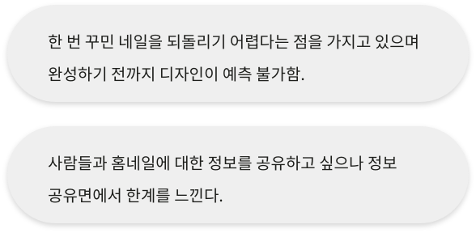
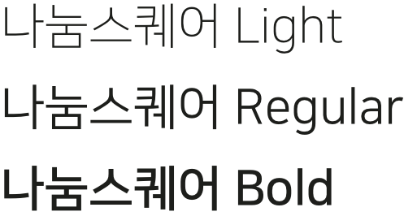

Ui/Ux Design
앱 디자인
가상의 네일에 꾸며
공유할 수 있는 앱
Overview
손수는 가상의 손톱에 꾸미고 카메라 필터를 사용해
자신의 손에 직접 적용해 볼 수 있으며
많은 사람들과 공유할 수 있는 서비스입니다.
Background
네일을 즐겨하는 사람들은 매번 자신의 손톱에 꾸미고 한 번 꾸민 되돌
리기 어려워 다양한 디자인을 시도할 수 없다는 불편함을 가지고 있습
니다. 가상의 손톱에 꾸며 많은 사람들과 공유할 수 있도록 가상 DIY 앱
을 기획하였습니다.
Project Goal
사용자의 경험에 의거한 직관적인 UI를 제공하여 쉽게 접근할 수 있도
록 간결하게 정리되어 앱 사용시 큰 어려움 없이 편리하게 할 수 있도록
목표로 합니다.
Problem
Solution
한 번 꾸민 네일을 되돌리기 어려워 다양한 디자인을 시도 할 수 없었던 사용자들을 위해 가상의 네일에 꾸미고 수정해 완성되기 전까지 예측할 수
없었던 네일을 카메라 필터를 사용해 자신의 손에 직접 적용해 확인할 수 있도록 공유를 통해 성취감을 느낄 수 있도록 네일 광장을 활성화 한다.
Design Keyword
Logo Type
Color System
Fonts
Icons
Splash to
Walk Through
손수의 주요 기능을 설명해주는
일러스트를 삽입하여 사용자의
이해를 도왔습니다.
Sign in to
Sign up
사용자가 로그인과 회원가입까지
쉬운 단계로 도달할 수 있도록
디자인하였습니다.
Home
Today mood!에서 매일 다른 네일 스타일
추천받을 수 있으며, 키워드 검색을 통해 원하
는 디자인을 쉽게 찾을 수 있습니다.
DIY
한 번 꾸민 네일을 되돌리기 어려워 다양한 디자인을 시도할 수 없었던 사용자들을 위해 가상의
네일에 꾸미고 사용자의 경험에 의거한 직관적인 UI를 제공하여 쉽게 접근할 수 있습니다.
Receipt
완성된 네일은 Receipt를 통해 사용자가 선택했던 디자인
상세 정보를 확인 할 수 있습니다.
Share & Post
관심있는 네일 디자인은 하트 꾸욱
다양한 네일 디자인을 찾았다면, 많은
사용자들이 디자인한 네일을 서로 공유
하고,사용자가 누른 하트와 저장 기능으
로 관심있는 네일 디자인을 다시 찾을 수
있으며 적용해 볼 수 있습니다.
Apply
완성된 네일 디자인을 카메라 필터를 사용해 자신의 손에 직접 적용해 볼 수 있습니다.
My page
자신이 디자인한 네일을 적용하고, 저장하여 소장함에서 열어서 언제든 확인 가능하며, 사람들과 공유할 수 있습니다.